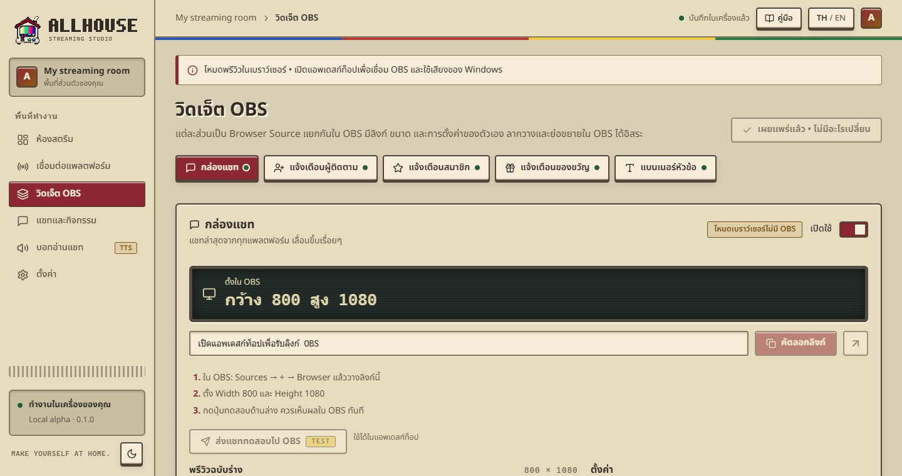
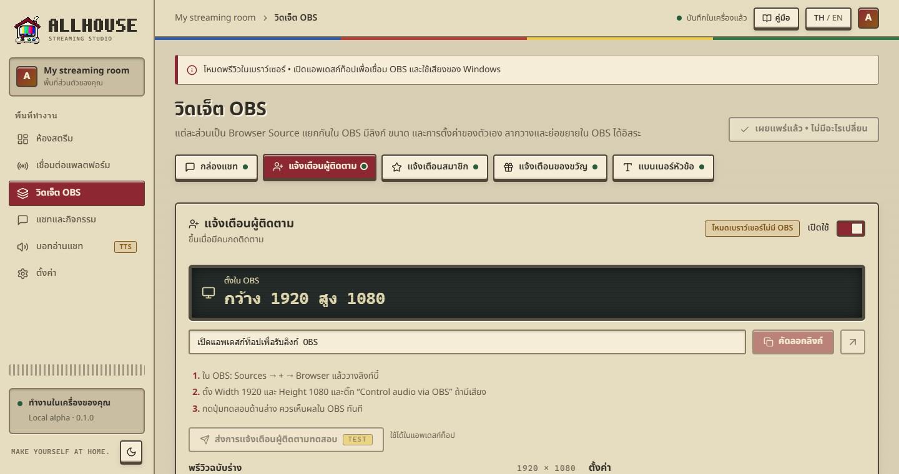
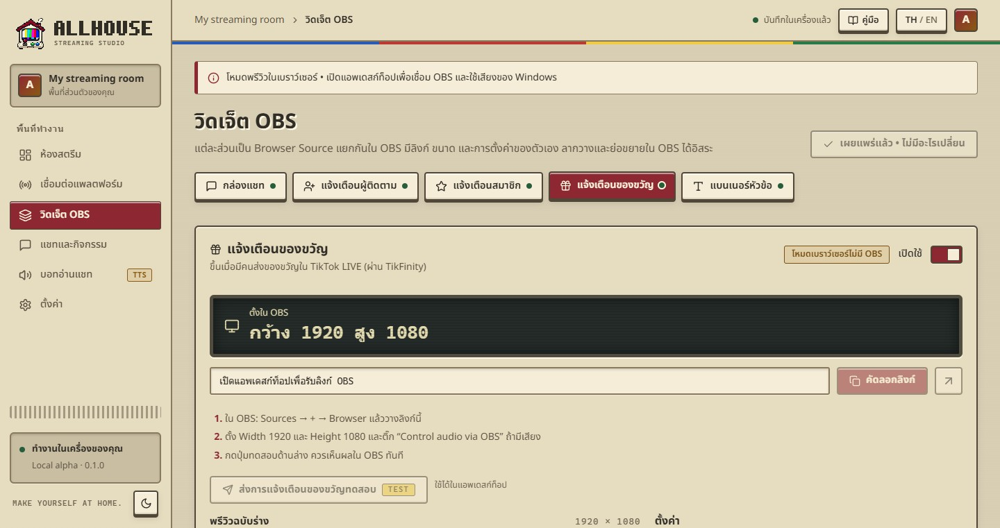
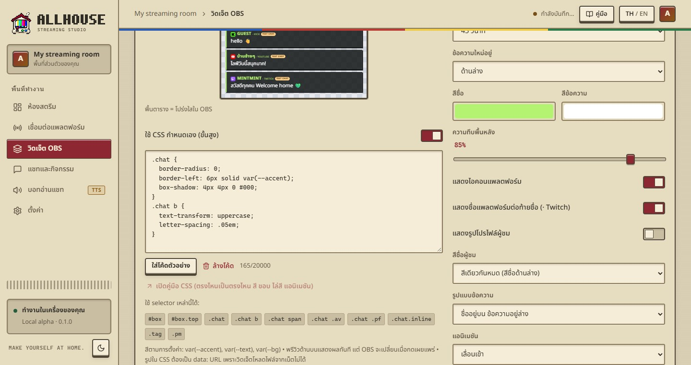

แต่ละส่วนเป็น Browser Source แยกกันใน OBS มีลิงก์ ขนาด และการตั้งค่าของตัวเอง ลากวางและย่อขยายใน OBS ได้อิสระ
Each widget is its own Browser Source in OBS, with its own link, size and settings. Move and resize them freely in OBS.

| วิดเจ็ตWidget | แสดงอะไรShows | ขนาดตั้งต้นDefault size |
|---|---|---|
| กล่องแชทChat box | แชทล่าสุดจากทุกแพลตฟอร์มLatest chat from every platform | 800 × 1080 |
| แจ้งเตือนผู้ติดตามFollow alert | ขึ้นเมื่อมีคนกดติดตามWhen someone follows | 1920 × 1080 |
| แจ้งเตือนสมาชิกSubscription alert | ขึ้นเมื่อมีคนซับ/สมัครสมาชิกWhen someone subscribes or joins | 1920 × 1080 |
| แจ้งเตือนของขวัญGift alert | ของขวัญ TikTok LIVETikTok LIVE gifts | 1920 × 1080 |
| แบนเนอร์หัวข้อBanner | หัวข้อ ข้อความรอง และรูปของห้องYour title, subtitle and image | 1920 × 1080 |
วิดเจ็ตแจ้งเตือนที่ใส่เสียง ให้ติ๊ก Control audio via OBS ใน Browser Source เสียงจะเข้าไลฟ์และปรับความดังใน OBS Audio Mixer ได้ แนะนำให้เพิ่มแบนเนอร์ก่อน แล้วค่อยเพิ่มแจ้งเตือน การแจ้งเตือนจะได้อยู่ชั้นบนสุด
For alerts with a sound, tick Control audio via OBS in the Browser Source so the sound reaches your stream and shows in the OBS Audio Mixer. Add the banner first and alerts after, so alerts sit on top.
ลิงก์วิดเจ็ตใช้ได้เฉพาะเครื่องนี้ และควรเก็บเป็นความลับ “เปิดอยู่ 1 หน้า” แปลว่า OBS เปิดหน้าวิดเจ็ตอยู่ ไม่ได้แปลว่ากำลังไลฟ์
Widget links only work on this computer; keep them private. “1 page open” means OBS has the widget loaded, not that you are live.
แก้อะไรในหน้านี้ พรีวิวจะเปลี่ยนทันที แต่ OBS ยังแสดงฉบับเดิมจนกว่าจะกด เผยแพร่ทุกวิดเจ็ต แท็บที่มีป้ายเหลือง “ยังไม่เผยแพร่” คือวิดเจ็ตที่มีการแก้ค้างอยู่ ไม่ต้องรีเฟรช Browser Source ใน OBS
Edits change the preview instantly, but OBS keeps the old version until you press Publish all widgets. Tabs with a yellow “unpublished” badge have pending edits. You never need to refresh the Browser Source.

ข้อความแจ้งเตือนAlert textใช้ {name} = ชื่อผู้ชม, {platform} = แพลตฟอร์ม, {message} = ข้อความ เช่น “{name} ได้กดติดตามผึ้งน้อย”{name} = viewer, {platform} = platform, {message} = their message, e.g. “{name} just joined the hive!”แสดงนานDuration2–30 วินาทีต่อการแจ้งเตือน2–30 seconds per alertขนาด / สีSize / colourขนาดตัวอักษร สีหลัก สีข้อความ ความทึบพื้นหลังFont size, accent colour, text colour, background opacityแอนิเมชันAnimationเด้งขึ้น ค่อยๆ ปรากฏ เลื่อนเข้า หรือไม่มีPop, fade, slide, or noneรูป / GIFImage / GIFPNG, JPG, WebP หรือ GIF เคลื่อนไหว ไม่เกิน 3 MB แสดงเต็มรูปไม่ถูกตัดPNG, JPG, WebP or animated GIF up to 3 MB, shown whole, never croppedเสียงแจ้งเตือนAlert soundMP3, WAV หรือ OGG ไม่เกิน 3 MB กด “ฟังในแอพ” เพื่อลองฟัง และปรับความดังได้MP3, WAV or OGG up to 3 MB; press “Play here” to listen, and set the volumeการแจ้งเตือนเข้าคิวทีละอัน ถ้ามีหลายคนติดตามพร้อมกันจะขึ้นต่อกันตามลำดับ จัดการคิวได้ที่หน้า “แชทและกิจกรรม”
Alerts queue one at a time: several follows at once play in order. Manage the queue on Chat & activity.

{gift} {count} {coins}ชื่อของขวัญ จำนวน และเหรียญรวม เช่น “{name} ส่ง {gift} ×{count}”Gift name, count and total coins, e.g. “{name} sent {gift} ×{count}”เหรียญขั้นต่ำMinimum coinsของขวัญที่มูลค่ารวมน้อยกว่านี้จะขึ้นแค่ในห้องแชท ไม่ขึ้นบน OBS (0 = ขึ้นทุกชิ้น)Gifts worth less than this only show in the chat room, not in OBS (0 = show all)คอมโบCombosส่งกุหลาบรัวๆ จะแจ้งเตือนครั้งเดียวตอนคอมโบจบ พร้อมจำนวนรวมA burst of Roses alerts once, when the combo ends, with the totalรูปของขวัญGift imageเปิด/ปิดการแสดงรูปของขวัญจาก TikTok บนการแจ้งเตือนShow or hide TikTok’s gift picture on the alertกล่องแชทChat boxขนาดตัวอักษร, จำนวนข้อความบนจอ, ซ่อนข้อความหลังกี่วินาที, ข้อความใหม่อยู่บนหรือล่าง, ความทึบพื้นหลัง, ไอคอนแพลตฟอร์ม, ชื่อแพลตฟอร์มต่อท้ายชื่อ (· Twitch), รูปโปรไฟล์ผู้ชม, สีชื่อ (สีเดียวกันหมด / สีตามแพลตฟอร์ม / สีของผู้ชมแต่ละคน) และรูปแบบ (ชื่ออยู่บน หรือชื่อกับข้อความบรรทัดเดียว)Font size, messages on screen, hide after N seconds, newest at top or bottom, background opacity, platform icon, platform name after the viewer (· Twitch), viewer profile pictures, name colour (one colour / per platform / each viewer’s own) and layout (name above, or name and message on one line)แบนเนอร์Bannerรูปแบบ (Studio / Minimal / Neon), หัวข้อ, ข้อความรอง, สีหลัก, รูปStyle (Studio / Minimal / Neon), title, subtitle, accent colour, image
ทุกวิดเจ็ตเขียน CSS เองได้ เปลี่ยนสี ขอบ ไล่สี เงา หรือใส่แอนิเมชัน อ่านวิธีทั้งหมดได้ที่ คู่มือ CSS กำหนดเอง ถ้าทำพัง ปิดสวิตช์แล้ววิดเจ็ตจะกลับเป็นแบบเดิมทันที
Every widget accepts your own CSS: colours, borders, gradients, shadows, animation. The full guide is in Custom CSS. Broke something? Turn the switch off and the widget is back to normal instantly.
ใต้หน้าวิดเจ็ตมีส่วน “ขั้นสูง” เป็นลิงก์เดียวที่รวมแบนเนอร์ แชท และการแจ้งเตือนไว้ในหน้า 1920 × 1080 เดียว ยังใช้ได้ แต่แนะนำให้ใช้วิดเจ็ตแยกเพราะจัดวางใน OBS ได้อิสระกว่า
Under the widgets there is an “Advanced” section with one link that puts the banner, chat and alerts on a single 1920 × 1080 page. It still works, but separate widgets are easier to arrange in OBS. Don’t use both at once, or everything shows twice.
Allhouse 0.1.0 · Local alpha · คู่มือนี้มากับแอพ เปิดได้แม้ไม่มีอินเทอร์เน็ตAllhouse 0.1.0 · Local alpha · This manual ships with the app and works offline
 MANUAL
MANUAL